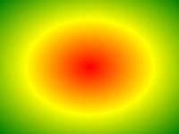

CSS3 グラデーション（Gradients）
CSS3 グラデーション（gradients）を使用すると、2つ以上の指定した色の間で滑らかな遷移を表示できます。
以前は、これらの効果を実現するために画像を使用する必要がありました。しかし、CSS3 グラデーション（gradients）を使用することで、ダウンロード時間と帯域幅の使用を減らすことができます。さらに、グラデーション効果のある要素は、拡大したときに見栄えが良くなります。グラデーション（gradient）はブラウザによって生成されるためです。
CSS3 では、2種類のグラデーション（gradients）が定義されています：
- 線形グラデーション（Linear Gradients）- 下/上/左/右/対角方向
- 放射グラデーション（Radial Gradients）- その中心によって定義される
線形グラデーション関連のプロパティ：background-image。
線形グラデーションのオンラインツール：グラデーションのオンラインツール。
ブラウザのサポート
表内の数字は、そのプロパティを完全にサポートする最初のブラウザのバージョンを示しています。
| プロパティ | |||||
|---|---|---|---|---|---|
| background-image | 1.0 | 4.0 | 1.0 | 1.0 | 3.5 |
注意：IE8 およびそれ以前のバージョンの IE ブラウザは、このプロパティをサポートしていません。
CSS3 線形グラデーション
線形グラデーションを作成するには、少なくとも2つの色ノードを定義する必要があります。色ノードとは、滑らかな遷移を表示したい色のことです。また、開始点と方向（または角度）を設定することもできます。
線形グラデーションの例：

構文
background-image: linear-gradient(direction, color-stop1, color-stop2, ...);
線形グラデーション - 上から下（デフォルト）
次の例は、上から始まる線形グラデーションを示しています。開始点は赤で、徐々に青に遷移します：
線形グラデーション - 左から右
次の例は、左から始まる線形グラデーションを示しています。開始点は赤で、徐々に黄色に遷移します：
例
左から右への線形グラデーション：
試してみる »
線形グラデーション - 対角
水平および垂直の開始位置を指定することで、対角グラデーションを作成できます。
次の例は、左上隅（から右下隅へ）始まる線形グラデーションを示しています。開始点は赤で、徐々に黄色に遷移します：
例
左上隅から右下隅への線形グラデーション：
試してみる »
角度を使用する
グラデーションの方向をより細かく制御したい場合は、定義済みの方向（to bottom、to top、to right、to left、to bottom right など）の代わりに角度を定義できます。
構文
background-image: linear-gradient(angle, color-stop1, color-stop2);
角度は水平線とグラデーション線との間の角度で、反時計回りに計算されます。言い換えると、0deg は下から上へのグラデーションを作成し、90deg は左から右へのグラデーションを作成します。

ただし、多くのブラウザ（Chrome、Safari、Firefox など）では古い標準が使用されていることに注意してください。0deg は左から右へのグラデーションを作成し、90deg は下から上へのグラデーションを作成します。換算式90 - x = yここで、x は標準角度、y は非標準角度です。
次の例は、線形グラデーションで角度を使用する方法を示しています：
複数のカラーノードを使用する
次の例は、複数のカラーノードを設定する方法を示しています：
例
複数のカラーノードを持つ上から下への線形グラデーション：
試してみる »
次の例は、虹色とテキストを持つ線形グラデーションを作成する方法を示しています：
例
試してみる »
透明度（transparent）を使用する
CSS3 グラデーションは透明度（transparent）もサポートしており、薄くなっていく効果を作成するために使用できます。
透明度を追加するには、rgba() 関数を使用して色ノードを定義します。rgba() 関数の最後のパラメータは 0 から 1 の値で、色の透明度を定義します：0 は完全に透明、1 は完全に不透明です。
次の例は、左から始まる線形グラデーションを示しています。開始点は完全に透明で、徐々に完全に不透明な赤に遷移します：
例
透明度を持つ左から右への線形グラデーション：
試してみる »
繰り返しの線形グラデーション
repeating-linear-gradient() 関数は、繰り返しの線形グラデーションに使用されます：
例
繰り返しの線形グラデーション：
試してみる »
CSS3 放射グラデーション
放射グラデーションはその中心によって定義されます。
放射グラデーションを作成するには、少なくとも2つの色ノードを定義する必要があります。色ノードとは、滑らかな遷移を表示したい色のことです。また、グラデーションの中心、形状（円形または楕円形）、サイズを指定することもできます。デフォルトでは、グラデーションの中心は center（中心点を意味）、形状は ellipse（楕円形を意味）、サイズは farthest-corner（最も遠い隅までを意味）です。
放射グラデーションの例：

構文
background-image: radial-gradient(shape size at position, start-color, ..., last-color);
放射グラデーション - 色ノードが均等に分布（デフォルト）
放射グラデーション - 色ノードが不均等に分布
例
色ノードが不均等に分布した放射グラデーション：
試してみる »
形状を設定する
shape パラメータは形状を定義します。値は circle または ellipse です。circle は円形を意味し、ellipse は楕円形を意味します。デフォルト値は ellipse です。
異なるサイズのキーワードを使用する
size パラメータはグラデーションのサイズを定義します。次の4つの値のいずれかになります：
- closest-side
- farthest-side
- closest-corner
- farthest-corner
例
異なるサイズのキーワードを持つ放射グラデーション：
試してみる »
繰り返しの放射グラデーション
repeating-radial-gradient() 関数は、繰り返しの放射グラデーションに使用されます：
例
繰り返しの放射グラデーション：
試してみる »
シュレーディンガーのバグ
135***2040@qq.com
参考アドレス
CSS の border: 1px solid rgba(0, 0, 0, 0.1); はどういう意味ですか？
意味は：要素の境界線を1ピクセル幅の実線に設定し、色は rgba を使用して表現します。
ここで、rgba は CSS3 のプロパティです。rgba の括弧内の最初の3つの数字は、red、green、blue の3色の RGB 値（0〜255）を表し、最後の1つはその色の透明度、すなわちアルファ値を設定します。範囲は0から1で、1に近づくほど透明度が低くなります。
シュレーディンガーのバグ
135***2040@qq.com
参考アドレス
HeruLee
lee***yat@163.com
CSS の不均等グラデーションのパーセンテージについての学習です。パーセンテージは、指定された色の標準的な中心線の位置を表します。パーセンテージの間は遷移色であり、パーセンテージの位置が重なるとグラデーションの遷移色が失われます。例えば次の文です：
ここで：
10% は、red の色中心線が線形グラデーション方向の 10% の位置にあることを示します。
85% は、green の色の中心線が線形グラデーション方向の 85% の位置にあることを示します。
90% は、blue の色の中心線が線形グラデーション方向の 90% の位置にあることを示します。
10% から 85% までは red-green の遷移色で、85% から 90% までは green-blue の遷移色です。
例えば、この文：
background: linear-gradient(red 0%, green 50%, blue 50%)これは background: linear-gradient(red 0%, green 50%, blue 10%) と同じ効果です。これは、パーセント位置の間に重なりがあるためにグラデーションの遷移色が失われ、さらにレンダリングには一定の順序があるからでしょう（ひとまずそう考えています）。
HeruLee
lee***yat@163.com